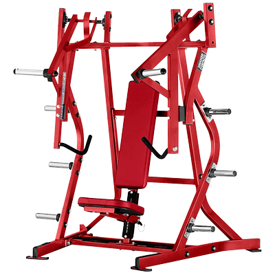
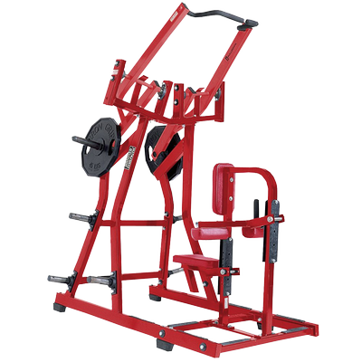
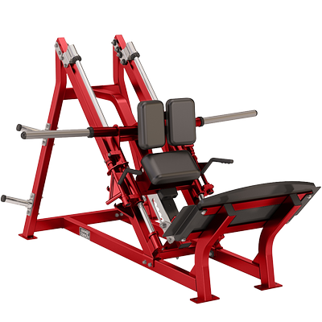
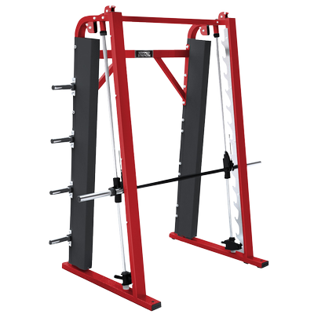
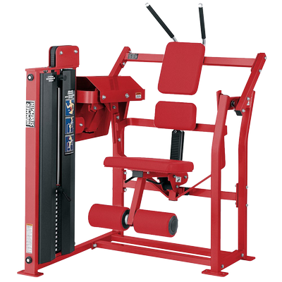

-

BENCH PRESS ISOLATERAL
La máquina Plate-Loaded Bench Press isolateral incorpora colgadores de pesas independientes que permiten movimientos divergentes y convergentes para desarrollar una fuerza compensada. Las opciones de agarre vertical y horizontal emulan al típico press de banca o los movimientos deportivos.
-

FRONT LAT PULLDOWN
La máquina Plate-Loaded Iso-Lateral Front Lat Pulldown se ha personalizado para adaptarse al movimiento del cuerpo humano. Gracias a los colgadores de pesas independientes, se pueden realizar movimientos divergentes y convergentes para desarrollar una fuerza muscular compensada y ofrecer una gran variedad de estimulación muscular. Permite realizar un arco de movimiento único, y junto con las posiciones de las empuñaduras con la palma hacia arriba se puede realizar una trayectoria de variación y de movimiento natural.
-

LINEAR HACK SQUAT
La máquina Plate-Loaded Linear Hack Squat se ha diseñado particularmente para trabajar en un ángulo imposible de ejecutar en otras máquinas. El mecanismo de rodillos ofrece un movimiento muy suave y sin ruido. Las manillas de inserción y extracción fáciles de colocar permiten al usuario establecer una posición de inicio y parada deseada. Incluye un limitador de rango para mayor seguridad.
-

VERTICAL SMITH MACHINE
Ofrece un recorrido de barra de cero grados para quienes prefieren los levantamientos verticales a los inclinados. La resistente Smith Machine ha sido sometida a las rigurosas pruebas según el estándar de Hammer Strength. Cuenta con 11 posiciones para el soporte de barras y 8 soportes para ofrecer un amplio almacenamiento de pesas. Con una resistencia inicial de 13,6 kg y una capacidad de carga de 280 kg, son máquinas construidas para usuarios de todos los niveles.
-

ABDOMINAL OBLIQUE CRUNCH
La máquina Plate-Loaded Abdominal Oblique Crunch incorpora un asiento giratorio para trabajar los dos grupos de oblicuos. Con este movimiento de acción dual se trabaja la totalidad de la pared abdominal.
-

GROUND BASE COMBO INCLINE
La máquina Combo Incline de Ground Base con pesas libres guiadas ejerce la carga en puntos opuestos, lo que permite a los usuarios realizar un movimiento de torsión con el cuerpo inclinado. Además, los agarres ayudan a estabilizar la posición del usuario en ejercicios con un solo brazo. Los equipos Ground Base se han diseñado para que el usuario mantenga una posición firme en el suelo, al tiempo que maximizan la potencia y la explosividad de todo el cuerpo.
-

BANCA OLÍMPICA MILITAR
La máquina Olympic Military Bench ofrece un press de banca militar de estilo olímpico con la misma durabilidad y alta calidad que los bancos y racks de Hammer Strength.
-

ISO-LATERAL ROW
La máquina Plate-Loaded Iso-Lateral Row se ha personalizado para adaptarse al movimiento del cuerpo humano. Gracias a los colgadores de pesas independientes, se pueden realizar movimientos divergentes y convergentes para desarrollar una fuerza muscular compensada y ofrecer una gran variedad de estimulación muscular. Presenta un diseño compacto y fino, e incluye múltiples empuñaduras para realizar ejercicios variados.